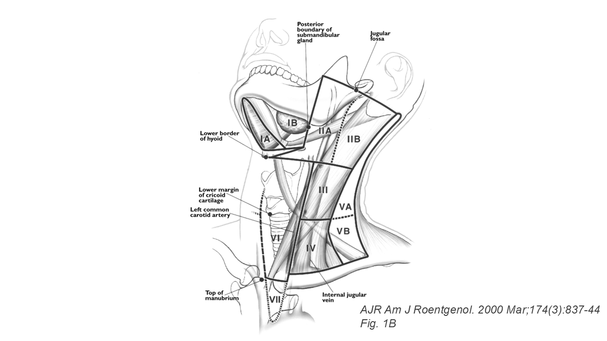

引言
頸部腫塊在兒科門診相當常見。研究指出，4–8 歲兒童約有 90% 可以摸到頸部淋巴結[1]，其中絕大多數為良性反應性。但要在這群孩子中精準揪出真正需要警覺的個案，是兒科臨床的關鍵能力之一。
本模組整理頸部淋巴結超音波由正常到惡性的完整影像光譜，並對應臨床決策的轉診指徵。
掃描技術與分區
- 探頭：Linear probe，7–15 MHz
- 掃描順序：由上而下、由前而後，依 Som et al. 頸部 Level I–VI 分區[4]
- 務必涵蓋 supraclavicular (IV/Vb) 區 —— 此區腫塊應視為惡性，直到證明為否

兒童正常頸部淋巴結的超音波表現
正常頸部淋巴結在超音波下呈現「腰子型」(reniform / kidney-shaped)：
- 長橢圓形、中央凹陷
- 凹陷處即為門部 (hilum) —— 呈現高回音脂肪組織
- 周邊皮質為低回音，相對於鄰近肌肉
正常大小參考值
| 分區 | 長軸上限 | 備註 |
|---|---|---|
| 一般頸部 (Level III–V) | 10 mm | — |
| Level IB & IIA | 15 mm | 引流口咽、扁桃腺、牙齒，常見輕度腫大 |
| Retropharyngeal nodes | 8 mm | — |
兒童族群目前沒有專屬大小標準，多沿用上述指標，需結合年齡、臨床表現綜合判讀。
正常 Color Doppler 表現
血流訊號集中在門部，呈現「放射狀」(radial / hilar pattern)；血流速度慢、阻力指數低。
良性反應性與感染性淋巴結
反應性淋巴結 (Reactive lymphadenopathy)
- 輕度腫大但仍維持腰子型
- 門部脂肪仍清晰可見
- 都卜勒下門部血流訊號增加、放射狀
- 沒有周邊軟組織發炎
細菌性 (Bacterial)
Staphylococcus aureus 與 group A Streptococcus 占單側化膿性頸部淋巴結炎的 53–89%，最常見於 1–4 歲[1]。化膿期 (suppurative phase) 影像警訊：
- 中央出現無回音 (anechoic) 區
- 周邊血流增加而非門部血流
- 出現分隔 (septations)
- 後方回音增強 (posterior acoustic enhancement)
- 合併周邊軟組織水腫 (periadenitis)
結核性 (Tuberculous lymphadenitis)
非典型分枝桿菌 (Non-tuberculous Mycobacterial, NTM)
好發於 5 歲以下，通常為單側、無痛、皮膚呈紫紅色變化。治療策略與典型結核完全不同。
幾個小兒風濕科應該認得的特殊型態
川崎氏症 (Kawasaki disease)
頸部淋巴結腫大是五大診斷標準之一，但實際出現率不到一半。超音波下會看到一個特殊表現：多顆低回音的淋巴結互相聚集，形成「葡萄串」(cluster of grapes)。單側為主、直徑大於 1.5 cm，可與單純細菌性化膿鑑別[1]。
菊池氏病 (Kikuchi-Fujimoto disease)
組織球壞死性淋巴結炎，好發於 30 歲以下女性。單側或雙側不對稱，以 Level II、V、III 最常見。可能出現周邊發炎、有時合併淋巴結內壞死。通常 1–6 個月自限性緩解，但鑑別診斷需要切片。
Castleman 氏病
Angiofollicular lymphoid hyperplasia。單中心型 (unicentric) 較多見於兒童及青少年，頸部最為常見。影像上以高度血管化、邊界清楚為特徵[3]。
貓抓病 (Cat scratch disease)
Bartonella henselae 感染所致。頸部第三常見（次於腋下、肘窩），通常於接觸貓咪後 3 週左右出現。接觸貓史是重要線索。
自體免疫疾病合併的淋巴結變化
| 疾病 | 盛行率 | 分布 | 特徵 |
|---|---|---|---|
| SLE | 33–69% | 全身性 | 柔軟、不痛、常 < 1 cm，多在年輕、活動性高病人 |
| JIA（特別是全身型） | — | 頸部、全身性 | 常合併肝脾腫大、發燒；MAS 風險高 |
| JSjS | 10–56% | 局部頸部 | 反應性，常在年輕、女性、病程短病人 |
| Sarcoidosis | > 90% 縱膈 | 雙側頸/腋/鼠蹊/肘窩 | 無痛、雙側對稱 |
| IgG4-RD | 30–55% | 多區 | 無痛、1–3 cm（可達 5 cm） |
惡性淋巴結的影像紅旗
以下任何一項出現，需要將惡性納入鑑別[1]：
- 失去腰子型，變為圓形 (round shape, S/L ratio > 0.5)
- 高回音的門部消失或偏離中央 (absent or eccentric hilum)
- 整體呈低回音、不均質 (hypoechoic, heterogeneous)
- 多顆聚集成團塊 (matting / conglomeration)
- Color Doppler 下出現周邊或包膜下血流 (peripheral / subcapsular vascularity)、血管位移或缺損
- Supraclavicular 位置的淋巴結 —— 永遠當作惡性處理
兒童年齡與好發惡性
| 年齡 | 常見惡性 |
|---|---|
| ≤ 6 歲 | 神經母細胞瘤 (neuroblastoma)、白血病 (leukemia)、橫紋肌肉瘤 (rhabdomyosarcoma)、非何杰金氏淋巴瘤 (NHL) |
| > 6 歲 | 何杰金氏淋巴瘤 (Hodgkin lymphoma) > 橫紋肌肉瘤 > 非何杰金氏淋巴瘤 |
新工具：剪切波超音波彈性成像
2025 年發表於 Pediatric Radiology 的研究[2]，由 Cañas 等人在 86 位兒童病人（96 顆淋巴結）身上使用 point shear wave elastography (pSWE) 測量頸部淋巴結硬度。結果顯示：
- 惡性組 vs. 控制組：剪切波速度顯著差異 (p < 0.0001)
- 惡性組 vs. 反應性組：剪切波速度顯著差異 (p < 0.0001)
原理與乳房、甲狀腺彈性成像相同：癌細胞密度高、組織硬，因此剪切波傳遞速度較快。雖未成為標準工具，但未來在不確定個案中很可能成為決定是否切片的重要參考。
何時應該擔心？何時應該轉診？
以下情境建議盡早安排影像進一步檢查、轉診兒童血液腫瘤科或小兒外科：
- 頸部淋巴結直徑 > 2 cm 且持續增大
- Supraclavicular 區出現的任何腫塊
- 質地硬、固定、不會痛
- 抗生素治療 4–6 週仍未消退
- 合併發燒、夜間盜汗、體重減輕、紫斑等全身性症狀
- 超音波出現上述「惡性紅旗」之任一項
- 多處淋巴結同時腫大且持續超過 6 週
- 合併肝脾腫大或縱膈腔病變
總結
兒童頸部淋巴結 90% 以上為良性反應性，家長不必每一顆小腫塊都嚇得睡不著。但身為醫師，我們也不能因「大部分都沒事」就掉以輕心。
超音波是兒童頸部腫塊評估最重要、最方便、最無輻射的第一線工具。配合年齡、臨床表現、抽血結果，可以幫助絕大多數的孩子在不必經歷不必要侵入性檢查的前提下得到正確的診斷；而對少數真正需要進一步追蹤或切片的病童，超音波也能即時提供清楚的影像證據，讓後續治療不再延誤。
參考資料
- Ludwig BJ, Wang J, Nadgir RN, Saito N, Castro-Aragon I, Sakai O. Imaging of cervical lymphadenopathy in children and young adults. AJR Am J Roentgenol. 2012 Nov;199(5):1105–1113.
- Cañas T, Suárez O, Rozas I, et al. Cervical lymph node characterization using point shear wave elastography in pediatric patients: initial experience. Pediatr Radiol. 2025;55:1281–1288.
- Rodolfi S, et al. Lymphadenopathy in the rheumatology practice: a pragmatic approach. Rheumatology (Oxford). 2024;63(6):1484–1496.
- Som PM, et al. An imaging-based classification for the cervical nodes designed as an adjunct to recent clinically based nodal classifications. Arch Otolaryngol Head Neck Surg. 1999.
- Ahuja AT, Ying M. Sonographic evaluation of cervical lymph nodes. AJR Am J Roentgenol. 2005;184:1691–1699.